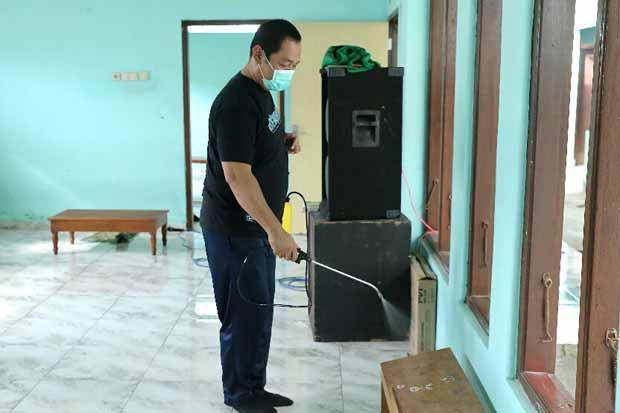

SEMARANG - Wali Kota Semarang Hendrar Prihadi melakukan penyemprotan cairan disinfektan di wilayah Kecamatan Tembalang, Selasa (24/3/2020). Dengan menggendong tabung berisi cairan disinfektan, Hendrar Prihadi berkeliling kampung untuk melakukan sterilisasi wilayah. “Setiap hari, kami melakukan penyemprotran cairan disinfektan ditiga wilayah kecamatan. Hari ini, kami melakukan penyemprotan di wilayah Tembalang dan Banyumanik,” kata wali kota yang akrab disapa Hendi ini. Hendi mengungkapkan, keterlibatan dirinya dalam upaya sterilisasi wilayah juga dimaksudkan untuk memotivasi masyarakat untuk bisa lebih semangat. Pasalnya di tengah situasi masyarakat yang resah menghadapi ancaman penyebaran virus corona (covid 19), upaya membangun psikologis masyarakat untuk bisa lebih positif juga diperlukan.
TEMPAT WISATA
